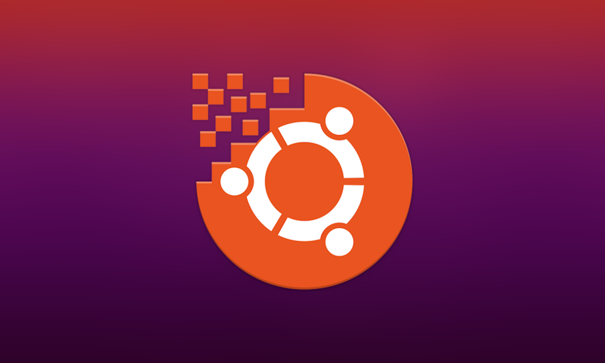

Qué el estudiante, realice los pasos necesarios para la instalación del software VMWare Workstation Pro, en la plataforma del sistema operativo Windows, para poder configurar máquinas virtuales que servirán como laboratorio de pruebas de Servidores Web.
Aprendimo s a instalar Windows Sever 2019.

Qué el estudiante, mediante el uso adecuado de los recursos online disponibles en la web, pueda realizar una investigación que le permita conocer sobre las funcionalidades y características en general de los Servidores tanto en el sistema Windows, como en el sistema Linux.
Aprendimo s la correcta instalación de un contenedor Docker en Windows 10.
Aprendimo s la correcta instalación de un contendor Docker en Ubuntu.
Aprendimo s a crear correctame nte un contenedor Docker en Windows 10 para un sitio web estático.
Aprendimos a configurar un Servlets en un servidor.
Aprendimo s a configurar específica mente un contenedor servlets apache tomcat en Ubuntu.
created with
Best Website Builder .